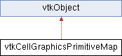

|
Etrek
|
|
Etrek
|
Maps cell connectivity and offsets from VTK data model into primitives that graphics libraries expect (points, lines and triangles). More...
#include <vtkCellGraphicsPrimitiveMap.h>

Classes | |
| struct | CellTypeMapperOffsets |
| struct | PrimitiveDescriptor |
Public Member Functions | |
| vtkTypeMacro (vtkCellGraphicsPrimitiveMap, vtkObject) | |
| void | PrintSelf (ostream &os, vtkIndent indent) override |
Static Public Member Functions | |
| static vtkCellGraphicsPrimitiveMap * | New () |
| static PrimitiveDescriptor | ProcessVertices (vtkPolyData *mesh) |
| break down and tag vertices with their vtk cell id. | |
| static PrimitiveDescriptor | ProcessLines (vtkPolyData *mesh) |
| break down and tag lines with their vtk cell id. | |
| static PrimitiveDescriptor | ProcessPolygons (vtkPolyData *mesh) |
| static PrimitiveDescriptor | ProcessStrips (vtkPolyData *mesh) |
| break down (into triangles) and tag strips with their vtk cell id. | |
Maps cell connectivity and offsets from VTK data model into primitives that graphics libraries expect (points, lines and triangles).
When given only vertices, lines and triangles and using 32-bit integer IDs, this class opts into low memory code paths, i.e, does not copy indices into new arrays. When input has poly-vertices, poly-lines and polygons or triangle strips or uses 64-bit integer IDs, this class makes an additional copy of the indices. A message is logged in the console to warn about potential OOM errors.
|
overridevirtual |
Methods invoked by print to print information about the object including superclasses. Typically not called by the user (use Print() instead) but used in the hierarchical print process to combine the output of several classes.
Reimplemented from vtkObjectBase.
|
static |
break down (into triangles) and tag polygons with their vtk cell id. Also generates edge masks used to hide internal edges of the polygon.